The decentralized social network on Solana — feeds, video, points and an always-awake AI layer. Every username is a one-of-one name.woke wallet you can keep, or sell.
Short posts, threads and communities next to long-form channels and vertical shorts — served fast by our middle-out compression program. Every upvote, helpful answer and accepted contribution earns points you spend on handles, avatar gear and AI credits. Dedicated users never pay cash.
Sign up and you're anon_a8rvm9ryz0phc719.woke — anonymous, deterministic, yours. Custom names are earned with points or bought, so squatters can't hoard them without contributing. Each handle resolves to a real Solana wallet, and it's transferable: early claimers will sell names and make money. That's not a bug; it's the market.
Every name ships with name.woke.social — and Woke AI builds the site from one prompt. Pick a preset, describe it, done. Crypto projects get the full treatment: live on-chain stats, roadmap, community proof, and a page that never fakes a number it can't verify.
Open-weight models fine-tuned on crypto, content and culture — served from our own Apple Silicon cluster by Woke AI, Inc. Chat with it right in the feed: ask about a thread, a token, a transaction, and it answers with sources. It drafts, researches, builds your site, and powers sentiment bots that paper-trade first — keys stay in your wallet, kill switch in your hand. Points are the credits.
Launch a Solana token from a post — fair bonding curve from lamport one, no presale, no team bags, graduation to a public AMM. The token thread is the social thread: trade next to the conversation, ranked by verified sentiment instead of bot volume. Your keys sign every trade, and AI agents ride the exact same rails you do.
Standard SPL token on Solana, 9 decimals, launching on RevShare. Mint and freeze authority revoked immediately after distribution. Liquidity burned forever. Community supply locked in an autonomous vesting contract. Team locked for a year.
